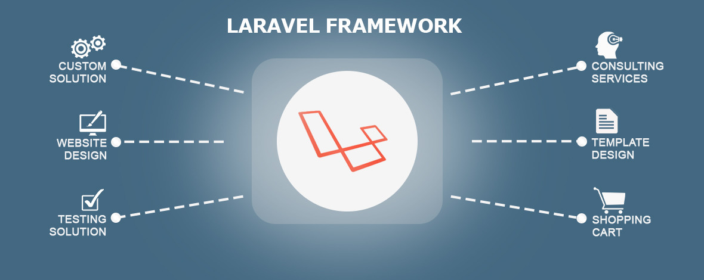

Software Engineer
Hi! I specialize in building web systems & mobile applications based in Pangasinan, Philippines. I'm an aspiring software engineer looking to enhance my knowledge and skills. Want to know more about me?


Blog Posts
View Medium



Crack the Laravel Code: Essential Tips for Swift Learning
Published on July 28, 2024
Read Blog
→